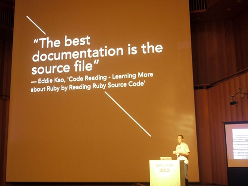

Code Reading @ RubyKaigi 2013

很高興這次能有機會到日本參加 RubyKaigi 2013，我分享的題目是：「Code Reading, Learning More about Ruby by Reading Ruby Source Code」，算是個滿冷門的題目，主要是分享我自己從閱讀 Ruby 原始程式碼中學習到的一些經驗。不過當天還有不少朋友來捧場，讓場子看起來不會太冷清，真是太意外了 (其實我也搞不清楚到底有多少人，我當時已經緊張到沒辦法算數了) 。
在進入主題之前，我問大家有多少人曾經來過台灣，結果在場有十來個人舉手，就以現場人數的比例來說不算少。
View on Speaker Deck | Download PDF
雖然之前有一些些上台演講的經驗，但這是第一次出國演講，而且還是全程用英文演講，我知道有很多的大神甚至 Ruby Committer 就坐在台下，所以我相當緊張。我那個「上台的前一天不會睡」的魔咒果然還是依舊存在，所以演講當天凌晨四點，我拿著筆電到飯店的大廳練習對著空氣講，練到早上七點，但還是覺得不夠穩。
我的演講廳是小間的，所以壓力有稍微小一點點。
為了怕現場出包，所以在 code review 展示的部份我是用預錄的，不過事後想想好像直接現場操作比較容易掌控時間
上午的演講結束後，下午發生的小插曲讓我抖了好大一下。我在演講內容裡有提到一些在 Ruby 的原始碼裡面有一些小地方的命名不太優，當下大家笑得很開心，雖然娛樂效果達到了，但我其實也有點擔心會不會有什麼不好的副作用。結果上午的講場結束，下午就看到這則：
哇!! 我有嚇到的感覺了，不過因為我個人覺得這樣好像有些失禮，所以當晚的 Official Party，我就親自去跟 @nobu 說聲不好意思，希望沒有造成他的困擾。其實我也是想趁這個機會認識一下只有在網路上才能看得到的傳說大神，而且他好像一點也不在意。
第三天的議程，我本來就打算要來聽 Jim Gay 的主題(他是 Clean Ruby 一書的作者 )，沒想到坐下來沒多久竟然看到自己的名字跟前一天講的東西出現在投影片上：

再度有被嚇到的感覺。
活動結束後，RubyKaigi 2013 的頭目角谷也推了一篇：

再次看到自己的名字被提到，有些驚訝也有些不好意思，不過這個「Conference-Driven Development(CDD)」 聽起來好像不錯，而且我喜歡「RubyKaigi made Ruby Better」，如果有朝一日我有能力，我也希望可以多貢獻一些心力。
感謝高井さん (@takai) 幫我拍的照片，讓我在 Rubyist 時計上也可以有一張漂亮的照片。
photoed by @takai
這趟日本之行有學習到不少東西，收獲很多，會在接下來的幾篇文章介紹。最後，有講的不好的地方，還請多多指教。
Thank you all, RubyKaigi team, you’re all AWESOME!